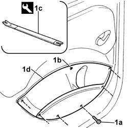
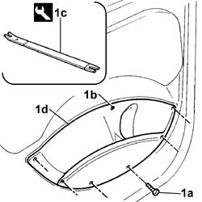

7020C36 oddment pouch of sliding side door, l.h. or r.h. - r r
- Path
- Procedures > 70 FITTINGS > 7020 LOAD CARRYING COMPARTMENT DOORS > 7020C sliding side door > 7020C36 oddment pouch of sliding side door, l.h. or r.h. - r r
- Kind
- repair procedure (removal / refitting; the operation number is the code)
- Applies to
- all engines; all production periods
- Interactive page
- https://sloeber94.github.io/elrnDB-fDbl/en/#/2585059
Applies to: all engines; all production periods; only with equipment: Doblò trim level
 Removing
Removing
 Refitting
Refitting1. Undo the bolts (1a), prise off the stud (1b), using tool (1c), and remove the oddments pouch (1d).

Applies to: all engines; all production periods; only with equipment: Doblò trim level
Refitting
RemovingCheck that the stud is not damaged.
Fit the oddments pouch, securing first the stud on the bodywork and then tightening the bolts.
Applies to: engines: 1.6 16v, 1.3 JTD 16V, 1.9 JTD 8V; all production periods; only with equipment: 7 seater
Removing
Refitting1. Undo the bolts (1a), prise off the stud (1b), using tool (1c), and remove the oddments pouch (1d).
 | Name | Country |
|---|---|---|
1c | Scraper blade | 1.878.077.000 |

Applies to: engines: 1.6 16v, 1.3 JTD 16V, 1.9 JTD 8V; all production periods; only with equipment: 7 seater
Refitting
RemovingCheck that the stud is not damaged.
Fit the oddments pouch, securing first the stud on the bodywork and then tightening the bolts.